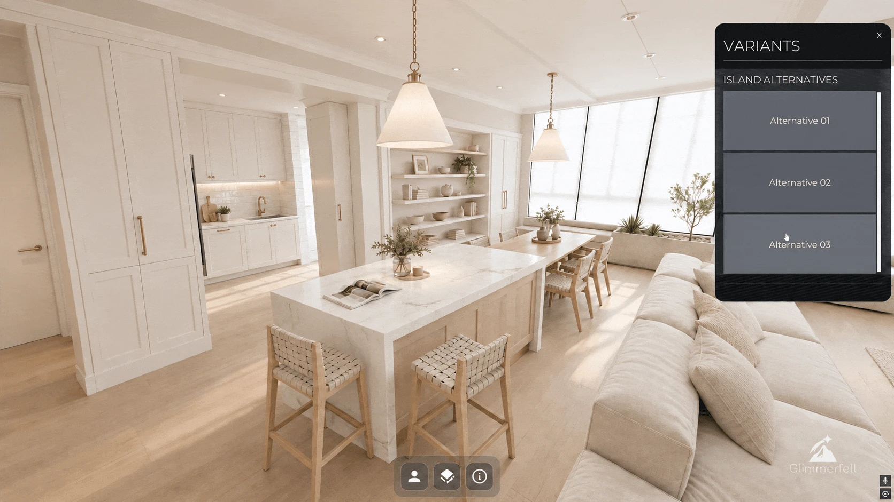

Off-plan buyers and investors are asked to commit to a home they cannot see. Instead of asking them to imagine it, a digital twin lets them walk through it.
The imagination gap
Every off-plan sale starts with a request: imagine this. Picture the finished build from a set of floor plans, a few pre-rendered images and a site that is still an empty section. Now picture yourself living in it.
Most people cannot do that. Reading a floor plan as a space you move through is a skill, and few buyers or investors have it. The renders help, but they show the angles the campaign chose, not the questions the buyer is actually asking:
- How big does the living room feel once the sofa is in?
- What will I see from this window?
- Where does the sun fall in the afternoon?
- Does the kitchen flow into the dining area the way I want it to?
Whatever cannot be answered gets filled in by imagination. Imagination either oversells the home and disappoints later, or it fills with doubt and the deposit never gets paid.
The people who can picture it
The developer can see the finished build. So can the architect, and so can a good sales team. They have read the plans many times and walked through many similar homes. They do their best to explain it, with words, gestures and more renders.
But explaining does not close the gap. The buyer is still being asked to borrow someone else’s imagination, and a decision this large should not rest on that.
Glimmerfell sales platform explained
An open home for a building that does not exist yet
The best way to show a finished home is to let people step into it. A Glimmerfell digital twin is built at 1:1 scale from the developer’s own drawings and placed in its real surroundings. Visitors walk through it as they would at any open home for an existing property. Nothing has to be imagined, because they are there.
- Walk through it: move from room to room at their own pace and feel how the spaces connect.
- Look out of the windows: see what they will actually see, from the right height and the right direction.
- Measure things: check that the couch, the dining table or the piano will fit.
- See the sun: watch how the light moves through the rooms over the day and across the seasons.
- Change materials: try a different benchtop, floor or cladding, and see it in place.
- Swap designs: compare layout options side by side, much like a car configurator.

Like a car configurator, every choice shows up straight away and in place. The buyer is not comparing pages in a brochure. They are standing in their kitchen, trying the options.

Why it matters
When nobody has to imagine the outcome, the conversation moves from “what will it be like?” to “which one do I want?”.
- For buyers and investors: the confidence to commit off-plan, from across town or from another country, knowing what they will get.
- For the sales team: instead of describing the home, they walk through it with the buyer and answer questions on the spot.
- For the developer: one twin serves the sales walkthrough, VR sessions, campaign film and stills, all from the same model.
- For approving authorities: a proposal seen in its real context, from the street and from the neighbours’ side, rather than described in a report.
The imagination gap is not a failing of buyers. It is a gap in how unbuilt homes have always been shown. A digital twin closes it.